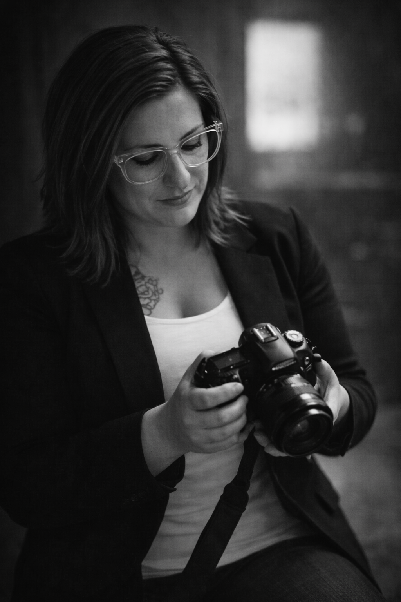

1
Conversation Design
We shape thoughtful prompts ahead of time so the interview feels natural, emotionally rich, and guided with care.
Many families wish they had asked more questions while they still had the chance. The Storied Portrait helps preserve the voices, memories, and wisdom of loved ones through thoughtful documentary-style films.
Guided with care, beautifully filmed, and crafted to become an heirloom your family can return to for generations.
Memories fade quietly. Voices disappear. Details that once felt unforgettable can be gone before anyone realizes they were never preserved. The Storied Portrait exists to hold onto what matters, the cadence of a laugh, the story behind a tradition, the wisdom that shaped a family.
This is more than a camera and a list of questions. It is a carefully guided storytelling experience built to feel calm, meaningful, and deeply personal, with an end result that feels worthy of generations.
Families come to The Storied Portrait because they want something beautiful, but also something easy. Every part of the experience is designed to reduce pressure and create space for honesty, warmth, and real reflection.
We shape thoughtful prompts ahead of time so the interview feels natural, emotionally rich, and guided with care.
The session is filmed in a comfortable setting with a calm, documentary-style approach that invites real presence.
The final film is edited with intention so it feels elegant, emotionally resonant, and worthy of being kept for decades.
A Storied Portrait session is a guided interview where a loved one shares their life story in their own words. These films preserve the moments, beliefs, humor, and heart that often cannot be captured in photographs alone.
Watch a featured Storied Portrait here. Seeing a story unfold on film gives families a sense of the warmth, honesty, and care that goes into every portrait.
“This is more than a video. It becomes a way to hear someone again, to keep their wisdom, humor, and spirit close.”
Families often say these portraits become one of the most meaningful things they have, not just because they preserve memories, but because they preserve presence.
Families choose The Storied Portrait because the experience is thoughtful and deeply personal. The goal is not simply to record a story, it is to create a space where someone can reflect on their life with warmth, honesty, and dignity.
The interview process is intentionally unhurried so stories unfold naturally and people feel comfortable sharing what matters most.
Careful lighting, sound, and editing give each portrait the feeling of a small documentary film rather than a simple recording.
The final portrait becomes something families return to again and again, a voice, a story, and a presence preserved for future generations.
Amanda is a filmmaker and storyteller devoted to preserving the voices, memories, and life stories that shape families and communities. Through The Storied Portrait, she creates documentary-style films that help people hold onto what matters most.

The heart of The Storied Portrait is simple: stories matter, and the people we love deserve to be remembered in more than fragments. This work is about preserving voice, presence, and meaning before time quietly carries them away.
Through this work, Amanda creates a space where people can slow down and share the memories, lessons, humor, and reflections that shaped their lives. The result is a film that feels deeply personal, something families can return to for generations.
Most people are not looking for a video. They are responding to a feeling, the quiet realization that someone’s stories, voice, humor, and wisdom deserve to be kept while there is still time to preserve them well.
Families often reach out when they realize how much could be lost if a parent or grandparent’s voice and memories are never intentionally recorded.
Retirement, illness, milestone birthdays, anniversaries, and becoming a grandparent often create the perfect moment to preserve a life story with meaning.
More than photos, families want the stories behind the pictures, the values, laughter, perspective, and reflections that make someone unforgettable.
A simple, meaningful way to preserve a loved one's voice, memories, and life story. Each session is designed to feel relaxed and conversational while capturing the moments and reflections that matter most.
A guided documentary-style interview filmed in a comfortable setting. Thoughtful prompts help draw out meaningful stories, memories, and life reflections.
$350
Families often have a few questions before deciding to record a story. Here are a few of the things people commonly ask before booking a Storied Portrait session.
A legacy video portrait is a guided filmed interview that preserves a person’s life story, memories, values, and voice in a beautifully edited keepsake film.
Sessions can be filmed in the comfort of a home or another meaningful location that helps the subject feel relaxed and at ease.
It is ideal for families, parents, grandparents, founders, and anyone who wants to preserve a meaningful life story with care.
The most meaningful stories are often the ones people assume they will have time to capture later. Start the conversation now and create something your family can keep forever.
Book a discovery call to talk through your vision, ask questions, and see whether a Storied Portrait session feels like the right fit for your family.